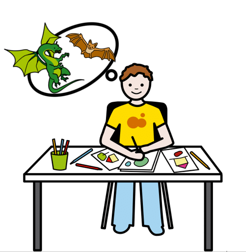
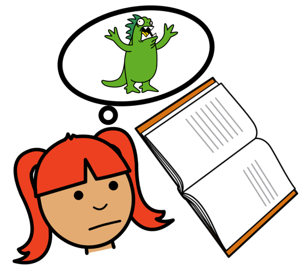
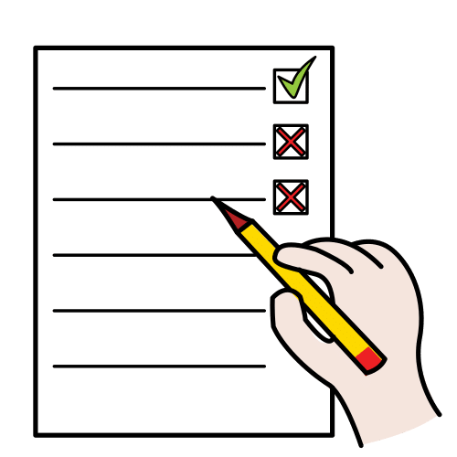
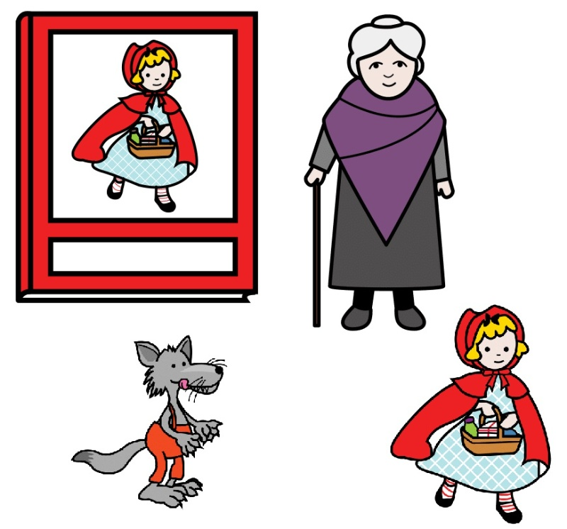
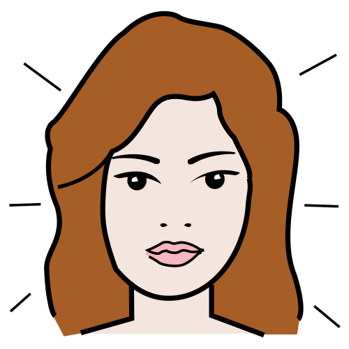

Situación o exigencia necesaria para hacer o crear algo.
Ejemplo:
Las condiciones del concurso es crear una receta con patatas, manzanas, leche y plátanos.
Desafío
Definición:
Situación difícil a la que alguien se enfrenta.
Ejemplo:
Mi amiga ha superado el desafío del baile.
Ficticio
 Definición:
Historia o cosa imaginada o inventada
Ejemplo:
Andrea ha dibujado una historia ficticia sobre un dragón y un perro.
Imaginación
 Definición:
Capacidad para inventar o pensar cosas diferentes a las que piensa todo el mundo.
Ejemplo:
Cuando yo leo uso mi imaginación.
Rúbrica
 Definición:
Tabla que se utiliza para valorar lo aprendido.
Ejemplo:
La maestra usa la rúbrica para poner las notas.
¡Hola de nuevo! Has llegado hasta aquí así que ya conoces muchas cosas del diario personal. También sabes identificar y expresar emociones, usando para ello diferentes conectores.
Sin embargo, todavía no has acabado. He estado pensando en nuevos retos para ti, tareas más complejas y creativas ¡Y lo he conseguido! Estoy muy emocionado con estos desafíos.
En las siguientes actividades tendrás que crear un diario ficticio. Es decir, tendrás que inventar un diario, con todo lo que eso conlleva ¿Estás nervioso y nerviosa? Porque yo estoy impaciente por verte trabajar ¡Mucha suerte!
Definición:
Historia o cosa imaginada o inventada
Ejemplo:
Andrea ha dibujado una historia ficticia sobre un dragón y un perro.
Andrea ha dibujado una historia ficticia sobre un dragón y un perro.
1. Nuestro personaje tiene un diario personal
En esta actividad grupal tendrás que poner a prueba tu imaginación y creatividad. Es una tarea muy compleja, dividida en varios pasos. Pero seguro que puedes con ella. ¡Ánimo!
En primer lugar, debes inventar con tu grupo un personaje, que será el dueño del diario. Tienes total libertad con la creación, usa tu imaginación y seguro que acertarás.
Lo más importante es que inventes la forma de ser del personaje, sus deseos, sentimientos y emociones, junto con una pequeña descripción de su vida. Si te ves capaz, haz un dibujo del personaje. Y no te olvides de su nombre.
A continuación, tienes que crear junto a tu grupo cuatro entradas del diario de este personaje ficticio. Para ello tendrás que usar todo lo aprendido hasta ahora. Tu objetivo es conseguir que el resto de la clase conozca a tu personaje únicamente con los fragmentos del diario.
Por último, tendrás que leer el diario ante el resto de la clase. Tus compañeros y compañeras tendrán que intentar adivinar algunos de los rasgos de personalidad del personaje ficticio mediante sus entradas de diario, su expresión de emociones y sus reflexiones personales.
Definición:
Capacidad para inventar o pensar cosas diferentes a las que piensa todo el mundo.
Capacidad para inventar o pensar cosas diferentes a las que piensa todo el mundo.
Ejemplo:
Cuando yo leo uso mi imaginación.
 Definición:
Ser real o imaginario de un libro o un cuento.
Ejemplo:
En “Caperucita Roja” los personajes son Caperucita, la abuelita y el lobo.
 Definición:
Aspecto exterior o imagen que tiene alguien o algo.
Ejemplo:
Marta tiene buen aspecto, la veo muy guapa.
Lumen dice ... ¿Dudas con la descripción del personaje?
¿Tienes dudas con la creación del personaje? ¡No te preocupes, para eso estoy yo aquí!
Te recomiendo que el personaje inventado sea un niño o una niña de tu edad. Así te será más fácil identificarte con él y ella. Eso te ayudará a crearlo, a inventar su forma de ser, su aspecto, sus aficiones, etcétera. Puedes basarte en cómo eres tú o como son tus compañeros.
¿Aún con dudas? ¡No te preocupes! Aquí te dejo una pequeña guía que te ayudará a hacer la descripción del personaje.
Para completar esta tarea con éxito debes recordar todo lo que has aprendido hasta ahora. ¿Recuerdas cuando escribiste sobre tu último fin de semana? Pues es una tarea muy parecida, aunque ahora tienes la ayuda de tus compañeros y compañeras de grupo. No deberías tener ningún problema.
¡Enhorabuena! Una vez más has completado una tarea con éxito y aprendido bastantes cosas.
Ahora ha llegado el momento para el que te has estado preparando, el reto final.
Gracias a todo lo que has aprendido hasta ahora has conseguido superar la actividad anterior, crear en grupo un diario personal de un personaje ficticio. Pero para el reto tendrás que superar tú solo las dificultades que encuentres. En la siguiente actividad individual tendrás que realizar el producto final, que es nuevos fragmentos de tu diario personal. Sin embargo, estos fragmentos serán ficticios y tendrán que responder a una serie de claves que te voy a dar.
¡Mucha suerte! ¡Seguro que lo conseguirás!
Lectura facilitada
Tú has terminado el ejercicio anterior.
Tú has trabajado y aprendido en grupo.
Tú has conseguido hacer un nuevo diario.
Pero ahora te enfrentas al reto final.
Tú tienes que realizar el producto final.
El producto final es un nuevo diario personal.
Tú tienes que hacer unos fragmentos de diario.
El diario personal tiene que ser inventado.
Tú tienes que seguir unas instrucciones.
Seguro que tú tendrás éxito en el reto final.
2. Diario inventado
Vas a crear tres nuevos fragmentos de tu diario personal. Pero este diario es ficticio, ya que vas a contar cosas que no te han ocurrido.
En cada fragmento del diario debes incluir dos condiciones de la siguiente lista. En total usarás seis condiciones. Elige aquellas que prefieras.
En varias actividades anteriores has trabajado la creación del diario. Sin embargo, yo estoy aquí para ayudarte si todavía tienes dudas.
Si no recuerdas la estructura del diario, vuelve al apartado “Un diario estructurado”, donde encontrarás todos los elementos que deben aparecer, su orden y algunos ejemplos.
¿Todavía con dudas? Deberías volver atrás, a apartados anteriores y recordar tanto las actividades que hiciste como los diferentes ejemplos. Te aseguro que así lo tendrás todo claro y podrás superar el reto con facilidad.
Motus dice ...¿Podrás con el reto?
Si has llegado hasta aquí es porque has trabajado un montón y has aprendido muchas cosas. Seguro que has cometido varios errores hasta el momento, pero de ellos habrás aprendido igual o más que con tus éxitos.
Esta tarea puede parecer muy compleja, pero tienes todas las herramientas y aprendizajes necesarios para resolverla con éxito. Únicamente debes concentrarte, recordar lo aprendido y ponerte manos a la obra ¡Tú puedes!
3. ¿Cómo te van a evaluar?
Has trabajado muy duro. ¿Quieres saber cómo te va a evaluar tu profe? Tu maestro o maestra utilizará la siguiente rúbrica. Léela con mucha atención. Puede ayudarte a revisar y mejorar el reto...
En este último paso te propongo que reflexiones detenidamente sobre todo lo que has aprendido. Debes pensar qué ha sido lo más importante y lo que más te ha ayudado a superar el reto que te propuse.
Todo lo que descubras con tu reflexión te será muy útil para tu vida. Podrás usar lo aprendido cuando tengas que alcanzar o abordar retos parecidos en el futuro, ya sea en el colegio, en tu casa o en cualquier otra situación.
¡Para un momento y completa el PASO 4 de tu Diario de Aprendizaje (¿Qué he aprendido?)!.
Recuerda:
Pregunta a tu profesor o profesora si rellenarás el diario en papel o en el ordenador.
Si lo rellenas en el ordenador, ¡no te olvides de guardarlo cuando lo termines!
 Definición:
Definición: